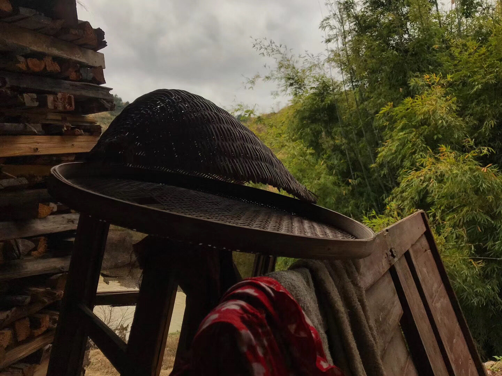
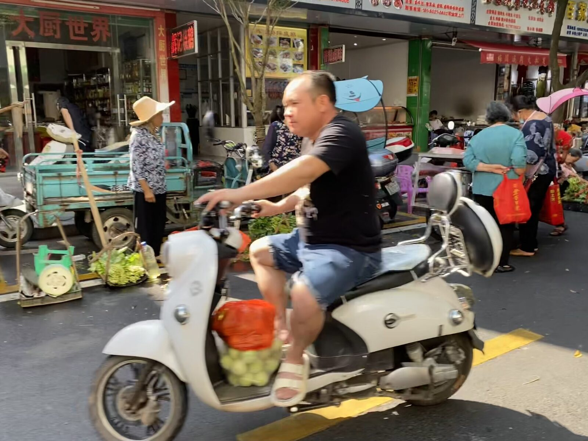

Look up a word
Every form is tagged with the town or village it comes from. The dictionary is in Chinese characters. Can't find how your village says it? Tell us.
Projects
Ready to use

Anyuan Hakka Dictionary Look up a word and hear how people say it. See the characters, IPA, and meaning, and listen to recordings. Forms from different towns are recorded separately. (In Chinese) Open the dictionary →
500 Everyday Sentences Five hundred everyday sentences with Anyuan Hakka recordings. Listen, then say it after the speaker. Plays directly in mainland China and abroad. More recordings are being added. (In Chinese) Start listening →Being prepared
- Plants of Anyuan
- There are many common plants in Anyuan's hills, field edges, and vegetable gardens. We photograph them at different stages of growth, record what they are called across Anyuan, with recordings and uses, and see whether the same plant has different names in different places. Browse the plant atlas →
- Sounds of Anyuan Hakka
- The sounds of Anyuan Hakka with examples and real recordings, for future reference and learning.
- Introductory course
- Anyuan Hakka pronunciation, words, and grammar, taught in Mandarin. The course is in preparation and will be announced here.
Take part
- Online meetups
- Chat in Anyuan Hakka now and then, share how people say things where you are from, or hear how people elsewhere say them.
Completed
- Linguistics in Anyuan Hakka (2024)
- An introduction to linguistics, taught in Anyuan Hakka for community members.
Anyuan in images
What do people in Anyuan call the things at the market, at home, and in the fields? We photograph everyday life in Anyuan and record what things are called. Tap a photo to enlarge it.
Join us
Online meetups
Looking for people to speak Anyuan Hakka with? You are welcome to join our meetups.
At the meetups we simply chat in Anyuan Hakka. Sometimes we talk about everyday life, sometimes about a topic, and we hear how people from different towns say things.
It doesn't matter how much you can say. If you want to talk, come and chat; if you have forgotten how to say some things, come and listen to how others say them.
We meet online every other Friday evening, Beijing time.
- When
- Every other Friday, 21:00–22:00 Beijing time
Autumn–winter 2026: 23 October to 18 December, 5 sessions - Where
- Online, on Tencent Meeting
Want to join? Email us, tell us where you are from and whether you would like to chat, and we will send you the meeting link.
The calendar link works on Apple devices and Outlook. If it does not open on your Android phone, just note the time above.
Share what you know
Your village's words
How does your village say a word in the dictionary? Is there another name, another meaning?
Sorting and checking
If you like, you can also help sort and check entries.
Photos and local knowledge
Household objects, garden plants, festival foods, and what they are called and how they are made.
Email us and tell us your town.
How your contribution is used
- Before anything goes online, we ask whether it can be public, whether it can be used in research, and how you would like to be credited.
- Every record is tagged with the town it comes from.
- You can ask us to change or withdraw your contribution at any time.
Questions
- I don't speak Anyuan Hakka. Can I still join?
- Yes. The meetups welcome people who want to listen to Anyuan Hakka or get reacquainted with it. You can also start with the 500 sentences: play a recording and say it after the speaker. The introductory course will be announced here when it is ready.
- I only speak a little. Can I still join?
- Of course. Words you know, expressions you remember, or things your elders often say can all become part of the record.
- I'm from Anyuan but don't live there. Can I join?
- Yes. The meetups are online, and people from Anyuan living anywhere are welcome.
- How can I help?
- Share a word or a photo, or tell us what something is called back home. If you like, you can also help sort and check entries.
- Places in Anyuan say things differently. Which one is correct?
- Different places may say things differently. We try to record these differences and note where each form comes from, rather than changing them all into one version.
- How is Anyuan Hakka written? What are those symbols?
- The dictionary uses Chinese characters and the International Phonetic Alphabet (IPA). Where a word has no agreed written form, we say so. If you cannot read IPA, that is fine: you can just look at the characters and meanings.
- Is Anyuan Hakka a language or a dialect?
- In everyday conversation we just call it Anyuan Hakka (安远话). It is a variety of Hakka with its own local features. Where the line between language and dialect falls also depends on linguistic classification and social history.
About this project
This project starts from Anyuan Hakka, and what it wants to do is simple: write down what people usually say, and give more people the chance to hear and learn Anyuan Hakka.
How people speak can differ across Anyuan. The same thing may have different names in different towns. We want to record these differences too, rather than keep only a so-called standard answer.
What is recorded here comes from people who speak Anyuan Hakka. The words, recordings, and stories people share all become part of this project.